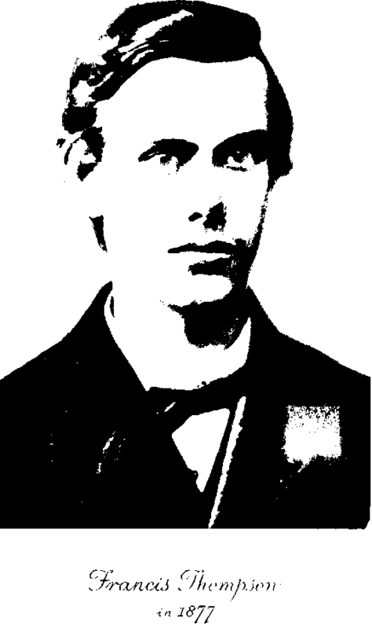

Manchester And Medicine. Part 6
Description
This section is from the book "The Life Of Francis Thompson", by Everard Meynell. Also available from Amazon: The life of Francis Thompson.
Manchester And Medicine. Part 6
The School Of Opium
Is that, then, a Manchester school of thought, or no more than an accident ? These two men, singularly conscious of nature's liturgy, one of whom wrote this passage, and the other of "pontifical death," had both been forced to dodge the cotton warehouses that they might see their sunsets; both had to fly from the normal liturgy of life and be estranged from themselves and their fellow-creatures by those qualities and sensitivenesses of the intellect which best enabled them to see in themselves and in their fellow-men the symbols and instruments of the Almighty.
Very like de Quincey's repudiation of guilt would have been Francis's :-
" Infirmity and misery do not, of necessity, imply guilt. They approach, or recede from, the shades of that dark alliance in proportion of the probable motives and prospects of the offender, and to the palliations, known or secret, of the offence; in proportion as the temptations to it were potent from the first, and as the resistance to it, in act or in effort, were earnest to the last."
Through what complication of persuasion by weakness and pain, impulse and even reason, the other Manchester boy passed may be guessed at through the more palpable screen of de Quincey's prose. De Quincey published his offences and defences, prosecuted, summed up, and reported in his own case; and it was upon his ruling that Francis built up his own subtler arguments, advanced and judged in camera.
Unlike de Quincey, he had no burning desire to justify himself; his own private excuse he had no desire to strengthen with the written and published word, or by seeking the corroborating content of others. He was consistently silent and secret on the point, and, if his silence did not avail to hide his secret, he was still silent in the manner of the lover who stole a kiss in the "Angel in the House": we knew that he knew we knew about his drug. His pleading was not before man's tribunal, but before the higher courts of conscience and of poetry. During his first experiences of the opium he had not the consolatory knowledge of his genius, for it was only in later years when he was delivered of his poetry and beheld it emerge unmarred by his former surrender to the drug, that he found peace of mind.
De Quincey, while he averred that the object of his confessions " was to emblazon the power of opium-not over bodily disease and pain, but over the grander and more shadowy world of dreams," did nevertheless owe his initial experience of the drug to the prompting and searching of frantic toothache. Nor was his object merely an emblazoning. On one page it is denunciation of an intolerable burden-the " accursed chain " ; on another his motive seemed to him to be to give to opium-eaters the consolation and encouragement of the knowledge that the habit may be put off, " without greater suffering than an ordinary resolution may support, and by a pretty rapid course of descent." He sets up his admirable argument in the midst of contradictions: he is positive of his own attitude even while he does not know which way to face, whether towards dreams, or towards the harsher fields of actuality. Under the generalship of his prose his reader may be marshalled into toleration and acceptance, or sent hurrying away from the contemplation of a dreadful enemy. De Quincey's two minds are apparent, too, in the history of his case. At times he turned upon himself and mastered the habit to which at others he was obedient, and even reverent.
How weak the prop, as weak as broken poppies ; its very praises fade on the page, like water thrown on sand, in the setting forth. De Quincey writes that the opium-eater never finishes his work, that Coleridge's contributions to literature were made in spite of opium, that it killed him as a poet, that the leaving off of this-his mighty opium-creates a new heaven and a new earth.
" Opium, the saving of my life," is one of Thompson's own most rare allusions to it. For de Quincey he never abated his old ardour of respect. The heat of his partisanship may be sufficiently measured in a letter, dated 1900, in which he falls upon some critic of his Manchester master:-
" Read the essay on D. Q.-read-read, and if you ever meet the writer, kick him till he roar at the squeak of a boot and snuffle at the whiff of a leather shop for the rest of his life ! Yet canst thou not kick to the measure of his deserts, wert thou Polypheme with earthquake on thy feet. Shall such monstrous fellows live and publish their villainous mismeasurement of great literature, and be hailed ' sane critics' by the muddy clappers-on of mediocrity ? I am whipped out of my patience that
I cannot call these scullions in good print 'ass unparalleled,' but must mince and fine my phrases to a smooth and customed censure."
Only those who know how well his mental matched his physical inability in assault and battery can be certain of the utter artifice of this exercise in petulance. He could be angry only when his anger was safely out of range of giving pain. He would kick in the closet of his note-books, but would ever be nearer kissing when his action came to be communicated. And even in his note-books he would seldom indulge personal spite ; his unkind entries are sheathed in blanks, so that no accident of perusal could hurt the feelings of the censured.
It has been doubted whether he actually " sat " for his medical examination, but considering how little bold he was among strangers and in a strange town, it is unlikely that on this first occasion he summoned enough courage to play truant. In all probability he was conducted to the place of examination, but one can only conjecture his behaviour as he was more than usually silent on his return. " I have not passed " is all the information he vouchsafed when, some little time after, he is supposed to have received notice of his failure. Two years more of pretended study followed, with some real reading at home in the evenings. It was Francis's quickness of intelligence during these extra hours of more congenial research that enabled him to appear in conversation with his father as one moderately well equipped in the knowledge of medicine. But after Francis again visited London in 1882, after four years in all of study, and again returned with the formula of " I have not passed," his father called upon the authorities at Owens College, and learnt that Francis's non-attendances were far in advance of his attendances. Durino- two more years of preparation he read less and less at home.

Continue to: